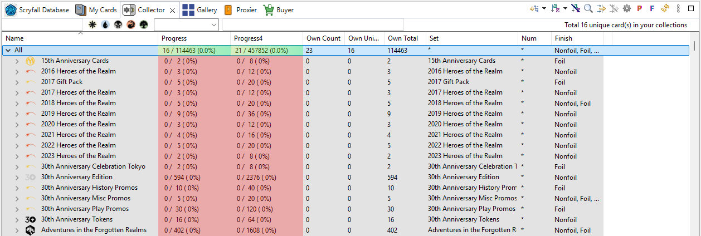

The Collector view is for set collectors. It lists the cards of the card database grouped by set, and shows for each set how many cards you own, the completion percentage and the value.

| Option | Meaning |
|---|---|
| Count Proxies (P) | Include proxy copies in the completion %, Own Count, Own Unique, the total in the status line and the value. Off by default: a set completed with proxies isn't really complete. |
| Count Finishes Separately (F) | Treat each finish (non-foil, foil, etched) of a printing as a card of its own — for completing a set in foil too. |
| Digital cards (D) | Only while the digital cards are enabled: collect the digital cards (MTGO / Arena) instead of the paper ones. The sets and the totals follow, and only your digital decks and collections count (see Digital cards). |
| Refresh | Recount after changes. |
Count Proxies and Count Finishes Separately are also on the preference page, where Restore Defaults turns both off.
Only cards you own count, wherever they are: cards in virtual decks and in Wishlist/To Print collections don't, while cards in an owned deck do.
By default the list is grouped by set, with the sets in alphabetical order. It can be grouped differently (by rarity, by color...), sorted and filtered like any other card list; Restore Defaults on its preference page brings back the grouping by set. Choose its columns in .